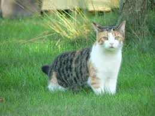

Did you know that over 2000 people per hour in India run a search right here looking to adopt a pet? Pet adoption is becoming the preferred way to find a new pet. Adoption will always be more convenient than buying a puppy for sale from a pet shop or finding a kitten for sale from a litter. Pet adoption brings less stress and more savings! So what are you waiting for? Go find that perfect pet for home! Approximately 1478 dogs & cats die every day on road in India. ThePetNest is on a mission to provide every dog and cat a home before 2035. It’s just one of the many ways ThePetNest! gives back and helps you become a part of something larger. Join ThePetStar Community and help setting up Pet houses in your surrounding for strays.

Top is a handsome cat a day, For more than 80 years, Animal Friends has been saving, impacting, engaging, enriching and affecting the lives of the pets and people of our region. Since our humble beginnings in 1943, we have grown into a full-service companion animal welfare organization serving the Pittsburgh community through rescue, rehabilitation, adoption, affordable vet care, supportive services, training, education and volunteer opportunities. With our progressive programs, Animal Friends is leading the way toward making our community a safer and more humane place. Simply put, we’re thinking outside the cage!